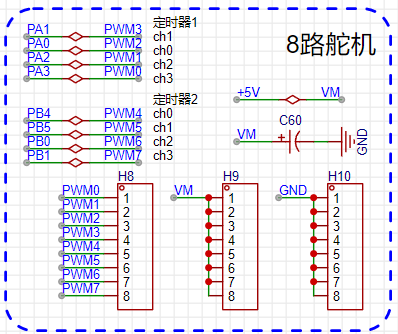

<!DOCTYPE lake>
<h2 data-lake-id="yw7U2" id="yw7U2"><span data-lake-id="u3b3c8633" id="u3b3c8633">学习目标</span></h2><ol list="u056d7427"><li data-lake-id="ucf4c40f2" fid="ud30ce781" id="ucf4c40f2"><span data-lake-id="ue7fe976e" id="ue7fe976e">实现舵机控制</span></li><li data-lake-id="ua8e5285c" fid="ud30ce781" id="ua8e5285c"><span data-lake-id="uef4c49fd" id="uef4c49fd">实现板级舵机驱动</span></li></ol><h2 data-lake-id="mP6kF" id="mP6kF"><span data-lake-id="u4a3ed9b1" id="u4a3ed9b1">学习内容</span></h2><h3 data-lake-id="IBy6I" id="IBy6I"><span data-lake-id="u3c518341" id="u3c518341">原理图</span></h3><p data-lake-id="u34035d95" id="u34035d95"></p><p data-lake-id="ua0c3db88" id="ua0c3db88"><span data-lake-id="u10e32db4" id="u10e32db4">8路PWM来控制舵机转动。</span></p><h3 data-lake-id="ePRtT" id="ePRtT"><span data-lake-id="u5157ae62" id="u5157ae62">舵机功能</span></h3><p data-lake-id="u9065c4e1" id="u9065c4e1"></p><p data-lake-id="u5d97ee24" id="u5d97ee24"></p><p data-lake-id="u07467f5c" id="u07467f5c"><span data-lake-id="u5bbb21f0" id="u5bbb21f0">舵机PWM控制</span></p><table class="lake-table" data-lake-id="SmXZ2" id="SmXZ2" margin="true" style="width: 576px" width-mode="contain"><colgroup><col width="90"/><col width="151"/><col width="132"/><col width="125"/><col width="78"/></colgroup><tbody><tr data-lake-id="udc894f77" id="udc894f77"><td data-lake-id="u30478d29" id="u30478d29" style="vertical-align: middle"><p data-lake-id="u3921958d" id="u3921958d" style="text-align: center"><span data-lake-id="u7eeefe2e" id="u7eeefe2e">转动角度</span></p></td><td data-lake-id="u00c47050" id="u00c47050" style="vertical-align: middle"><p data-lake-id="u3bc88ac8" id="u3bc88ac8" style="text-align: center"><span data-lake-id="uf388da3f" id="uf388da3f">高电平时长（ms）</span></p></td><td data-lake-id="u83fee92d" id="u83fee92d" style="vertical-align: middle"><p data-lake-id="u2a1b2894" id="u2a1b2894" style="text-align: center"><span data-lake-id="uc8cd6648" id="uc8cd6648">低电平时长(ms)</span></p></td><td data-lake-id="uaef390f2" id="uaef390f2" style="vertical-align: middle"><p data-lake-id="ub15b94c0" id="ub15b94c0" style="text-align: center"><span data-lake-id="u15ec4ac6" id="u15ec4ac6">周期时长(ms)</span></p></td><td data-lake-id="u3b8b9870" id="u3b8b9870" style="vertical-align: middle"><p data-lake-id="u7f46341c" id="u7f46341c" style="text-align: center"><span data-lake-id="u4b82a2d2" id="u4b82a2d2">占空比</span></p></td></tr><tr data-lake-id="ua0c43aa5" id="ua0c43aa5"><td data-lake-id="u6c5e2580" id="u6c5e2580" style="vertical-align: middle"><p data-lake-id="u8d992bec" id="u8d992bec" style="text-align: center"><span data-lake-id="u42abc29b" id="u42abc29b">0</span></p></td><td data-lake-id="u5fce335f" id="u5fce335f" style="vertical-align: middle"><p data-lake-id="ua6edd372" id="ua6edd372" style="text-align: center"><span data-lake-id="u11213900" id="u11213900">0.5</span></p></td><td data-lake-id="u449c6838" id="u449c6838" style="vertical-align: middle"><p data-lake-id="uaae87967" id="uaae87967" style="text-align: center"><span data-lake-id="u1b7dc39d" id="u1b7dc39d">19.5</span></p></td><td data-lake-id="u8adbedfa" id="u8adbedfa" style="vertical-align: middle"><p data-lake-id="u42bcb733" id="u42bcb733" style="text-align: center"><span data-lake-id="u356253f4" id="u356253f4">20</span></p></td><td data-lake-id="u15d4d13b" id="u15d4d13b" style="vertical-align: middle"><p data-lake-id="u65c10dc0" id="u65c10dc0" style="text-align: center"><span data-lake-id="u5cfbc9d9" id="u5cfbc9d9">2.5%</span></p></td></tr><tr data-lake-id="u8905f223" id="u8905f223"><td data-lake-id="u8c02e651" id="u8c02e651" style="vertical-align: middle"><p data-lake-id="uf57f3eec" id="uf57f3eec" style="text-align: center"><span data-lake-id="uafd422d1" id="uafd422d1">45</span></p></td><td data-lake-id="uc511c57a" id="uc511c57a" style="vertical-align: middle"><p data-lake-id="u389d414a" id="u389d414a" style="text-align: center"><span data-lake-id="ud5968577" id="ud5968577">1</span></p></td><td data-lake-id="u8eeefa9d" id="u8eeefa9d" style="vertical-align: middle"><p data-lake-id="ub326b795" id="ub326b795" style="text-align: center"><span data-lake-id="u9045c745" id="u9045c745">19</span></p></td><td data-lake-id="ue7b439fc" id="ue7b439fc" style="vertical-align: middle"><p data-lake-id="ua245237f" id="ua245237f" style="text-align: center"><span data-lake-id="u69c3b135" id="u69c3b135">20</span></p></td><td data-lake-id="uf3bc5a1c" id="uf3bc5a1c" style="vertical-align: middle"><p data-lake-id="ufb379c25" id="ufb379c25" style="text-align: center"><span data-lake-id="uc490d953" id="uc490d953">5%</span></p></td></tr><tr data-lake-id="uab10f1aa" id="uab10f1aa"><td data-lake-id="u28ceee4b" id="u28ceee4b" style="vertical-align: middle"><p data-lake-id="u49242602" id="u49242602" style="text-align: center"><span data-lake-id="ubfff1592" id="ubfff1592">90</span></p></td><td data-lake-id="u15910403" id="u15910403" style="vertical-align: middle"><p data-lake-id="ueb7394aa" id="ueb7394aa" style="text-align: center"><span data-lake-id="ub40674f5" id="ub40674f5">1.5</span></p></td><td data-lake-id="u24bdc4a5" id="u24bdc4a5" style="vertical-align: middle"><p data-lake-id="udfce090c" id="udfce090c" style="text-align: center"><span data-lake-id="u9f76a45d" id="u9f76a45d">18.5</span></p></td><td data-lake-id="u7ae8b1e4" id="u7ae8b1e4" style="vertical-align: middle"><p data-lake-id="u67cc09ba" id="u67cc09ba" style="text-align: center"><span data-lake-id="u4d2372f6" id="u4d2372f6">20</span></p></td><td data-lake-id="u83e1b79d" id="u83e1b79d" style="vertical-align: middle"><p data-lake-id="u1404f767" id="u1404f767" style="text-align: center"><span data-lake-id="u4e6d5232" id="u4e6d5232">7.5%</span></p></td></tr><tr data-lake-id="u32d4bcb2" id="u32d4bcb2"><td data-lake-id="ueea310c6" id="ueea310c6" style="vertical-align: middle"><p data-lake-id="u6b5faf88" id="u6b5faf88" style="text-align: center"><span data-lake-id="ue42f5ebe" id="ue42f5ebe">135</span></p></td><td data-lake-id="u1c25c5c1" id="u1c25c5c1" style="vertical-align: middle"><p data-lake-id="uf038a276" id="uf038a276" style="text-align: center"><span data-lake-id="u8d3330ca" id="u8d3330ca">2</span></p></td><td data-lake-id="udc5c3b05" id="udc5c3b05" style="vertical-align: middle"><p data-lake-id="ue514ba24" id="ue514ba24" style="text-align: center"><span data-lake-id="u66457672" id="u66457672">18</span></p></td><td data-lake-id="u9bd0d6d0" id="u9bd0d6d0" style="vertical-align: middle"><p data-lake-id="ue6209fc8" id="ue6209fc8" style="text-align: center"><span data-lake-id="u9dd90cf0" id="u9dd90cf0">20</span></p></td><td data-lake-id="u281c8fdb" id="u281c8fdb" style="vertical-align: middle"><p data-lake-id="u1060eb88" id="u1060eb88" style="text-align: center"><span data-lake-id="u506ea44f" id="u506ea44f">10%</span></p></td></tr><tr data-lake-id="u89f89241" id="u89f89241"><td data-lake-id="uda0043bd" id="uda0043bd" style="vertical-align: middle"><p data-lake-id="ub8f62911" id="ub8f62911" style="text-align: center"><span data-lake-id="u6eea8c8a" id="u6eea8c8a">180</span></p></td><td data-lake-id="u2daca42f" id="u2daca42f" style="vertical-align: middle"><p data-lake-id="u378861a6" id="u378861a6" style="text-align: center"><span data-lake-id="u73f2d654" id="u73f2d654">2.5</span></p></td><td data-lake-id="uba222e6c" id="uba222e6c" style="vertical-align: middle"><p data-lake-id="uf94d8a0f" id="uf94d8a0f" style="text-align: center"><span data-lake-id="u489ff637" id="u489ff637">17.5</span></p></td><td data-lake-id="ue52b830d" id="ue52b830d" style="vertical-align: middle"><p data-lake-id="u4258daf3" id="u4258daf3" style="text-align: center"><span data-lake-id="ucfb505c4" id="ucfb505c4">20</span></p></td><td data-lake-id="ud271fd48" id="ud271fd48" style="vertical-align: middle"><p data-lake-id="ub2bab371" id="ub2bab371" style="text-align: center"><span data-lake-id="u310b3d15" id="u310b3d15">12.5%</span></p></td></tr></tbody></table><p data-lake-id="u1911e6b1" id="u1911e6b1"><span data-lake-id="u1161f0c5" id="u1161f0c5">通过串口控制占空比的实现：</span></p><span class="yuque-card-unsupported">[codeblock]</span><p data-lake-id="u1a830187" id="u1a830187"><br/></p><p data-lake-id="ubc35f40b" id="ubc35f40b"><span data-lake-id="u8214fe73" id="u8214fe73">角度与占空比之间的关系：</span></p><p data-lake-id="u177eff39" id="u177eff39"><span data-lake-id="ubba6ee22" id="ubba6ee22">duty = angle / 180 * 10 + 2.5</span></p><p data-lake-id="ua09592de" id="ua09592de"><span data-lake-id="u1a4c0965" id="u1a4c0965">将串口接收代码改为如下：</span></p><span class="yuque-card-unsupported">[codeblock]</span><p data-lake-id="u3d5d584f" id="u3d5d584f"><span data-lake-id="uf0360848" id="uf0360848">​</span><br/></p><p data-lake-id="u37b2d330" id="u37b2d330"><span data-lake-id="u5e6c9744" id="u5e6c9744">​</span><br/></p><h3 data-lake-id="vIfRi" id="vIfRi"><span data-lake-id="u4663408d" id="u4663408d">驱动封装</span></h3><p data-lake-id="ub3fda018" id="ub3fda018"><span data-lake-id="u4c6cc976" id="u4c6cc976">定义板级舵机驱动，控制8路舵机</span></p><span class="yuque-card-unsupported">[codeblock]</span><span class="yuque-card-unsupported">[codeblock]</span><p data-lake-id="u06a81a54" id="u06a81a54"><span data-lake-id="ud8788ad1" id="ud8788ad1">调用方式：</span></p><span class="yuque-card-unsupported">[codeblock]</span><h2 data-lake-id="qMLDi" id="qMLDi"><span data-lake-id="ucb612f86" id="ucb612f86">练习题</span></h2><ol list="ue88907cd"><li data-lake-id="u4b45ed62" fid="uf6d0ebb7" id="u4b45ed62"><span data-lake-id="ucb43061c" id="ucb43061c">实现舵机驱动封装</span></li></ol>